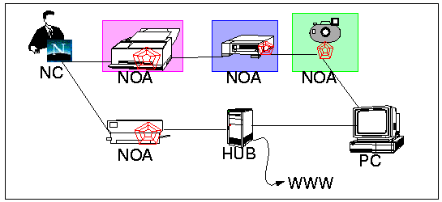

PIA demos
A working prototype has been developed and is available for "playing".
At any given time, running agencies can be found at:
The bravest among you might even like to run your own agencies and develop
your own agents. This is straightforward for unix users, simply set your
CVS_ROOT environment variable to /pia1/pia and do a cvs
checkout pia, then run pia/lib/perl/pia.pl
and away you go... (also see the manuals). Note that a
new Java version of the agency is under construction and will be available in
June of 97.
Greg Wolff email: wolff@crc.ricoh.com
Last modified: Thu Jun 5 18:58:07 1997